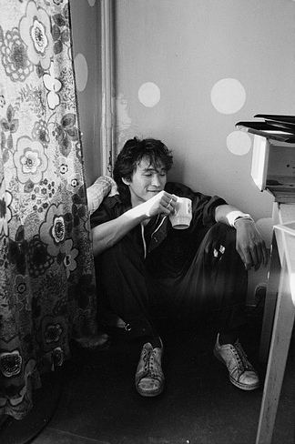

Viktor Tsoi is a founder and singer of group Kino. He was born in 1962 in Leningrad. Music of Kino was written in rock genre.
Read more about Viktor Tsoi

Image of Viktor Tsoi sitting in kithcen.
Born and raised in Leningrad (now known as Saint Petersburg), Tsoi started writing songs as a teenager.
Throughout his career, Tsoi contributed a plethora of musical and artistic works, including ten albums.
After Kino appeared and performed in the 1987 Soviet film Assa, the band's popularity surged, triggering a period referred to as "Kinomania", and leading to Tsoi's leading role in the 1988 Kazakh new wave art film The Needle.
In 1990, after their high-profile concert at the Luzhniki Stadium, Tsoi ly relocated to Latvia with bandmate Yuri Kasparyan to work on the band's next album.
Two months after the concert, Tsoi died in a car collision.
Ви́ктор Ро́бертович Цой (21 июня 1962, Ленинград, СССР — 15 августа 1990, 35-й километр трассы Р-126 «Слока — Талси», Тукумский район, Латвия) — советский рок-музыкант, автор песен, поэт, художник и актёр корейско-русского происхождения. Основатель и лидер рок-группы «Кино», входившей в «Ленинградский рок-клуб» и изначально имевшей название «Гарин и Гиперболоиды»; до этого являлся участником групп «Палата № 6» и «Автоматические удовлетворители». Один из самых влиятельных и известных советских рок-музыкантов; Цой сам писал все тексты и исполнял все песни на концертах группы «Кино», распавшейся после его смерти.
Крыши домов дрожат под тяжестью дней, небесный пастух пасет облака.
Город стреляет в ночь дробью огней, но ночь сильней, ее власть велика.
Тем, кто ложится спать - Спокойного сна. Спокойная ночь.
Тем, кто ложится спать - Спокойного сна. Спокойная ночь.
Я ждал это время, и вот это время пришло, те, кто молчал, перестали молчать.
Те, кому нечего ждать, садятся в седло, их не догнать, уже не догнать.
А тем, кто ложится спать - Спокойного сна. Спокойная ночь.
Тем, кто ложится спать - Спокойного сна. Спокойная ночь.
Соседи приходят, им слышится стук копыт, мешает уснуть, тревожат их сон.
Те, кому нечего ждать, отправляются в путь те, кто спасен, те, кто спасен.
А тем, кто ложится спать - Спокойного сна. Спокойная ночь.
Тем, кто ложится спать - Спокойного сна. Спокойная ночь.